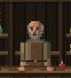
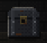

À esquerda, como cada um está no mundo hoje (recorte do jogo, a 1500×950). À direita, o candidato para a
interface, desenhado em código com as mesmas cores (arte-teste.js): no tamanho real de uso e ampliado, pixel a pixel.
Embaixo de cada par, o candidato no lugar dele, com a moldura e a superfície da HUD. Os cenários não mudaram.
Mercador · no mundo (a banca)

tamanho realampliado ×4
Mercador · na interface (o balcão)
48 px (uso)96 pxampliado ×8 (24×24 pixels de arte)
No lugar
O mercador"Tudo tem preço. Até você."300
Baú · no mundo (a sacristia)

tamanho realampliado ×4
Baú · na interface (a bolsa)
32 px (uso)64 pxampliado ×12 (16×16 pixels de arte)